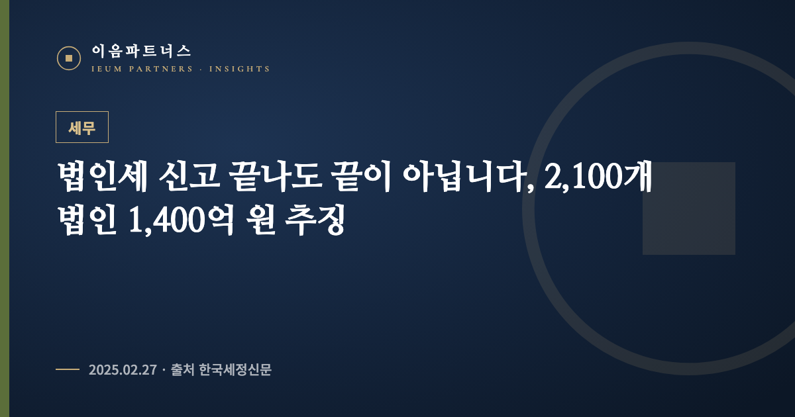

법인세 신고 끝나도 끝이 아닙니다, 2,100개 법인 1,400억 원 추징

3월 법인세 신고를 마치면 한 해 세금 일이 끝났다고 생각하기 쉽습니다. 그런데 국세청은 신고가 끝난 뒤에도 신고 내용을 다시 들여다보고, 잘못된 부분은 수정신고를 받거나 추징합니다. 이 글에서는 국세청이 신고내용 확인에서 실제로 적발한 사례를 실수형과 고의형으로 나눠 정리합니다.
2025년 2월 국세청 발표에 따르면 전년도 신고내용 확인으로 2,100여 개 법인이 1,400여억 원을 잘못 신고한 사실이 드러났습니다(한국세정신문). 다음 법인세 신고 전에 같은 실수를 피하려면 지금 미리 점검해 두는 것이 좋습니다. 우리 회사 신고 내용이 궁금하시다면 카카오톡 채널 이음파트너스로 편하게 물어보셔도 됩니다.
신고내용 확인, 무엇을 보나
국세청은 신고 뒤 신고도움자료(신고 전에 회사별로 안내하는 주의 항목)를 반영했는지, 공제·감면을 제대로 적용했는지 분석합니다. 그리고 “탈루금액이 크거나 추가 사실관계 확인이 필요한 경우에는 세무조사 대상으로 전환”해 검증합니다(한국세정신문). 적발 기업 대다수는 감면 대상이나 상시근로자 수 계산을 잘못한 경우였습니다.
자주 하는 실수
| 구분 | 내용 |
|---|---|
| 중소기업특별세액감면 | 수도권 중기업은 대상이 아닌데 적용 (예: 매출이 소기업 기준 30억 원을 넘은 전문·과학·기술서비스업) |
| 고용증대세액공제 | 친족·임원을 상시근로자 수에 넣어 고용이 늘어난 것처럼 계산 |
| 최저한세 적용 순서 | 최저한세(감면을 받아도 최소한 내야 하는 세금) 적용 대상 공제·감면을 먼저 적용하지 않아 농어촌특별세 과소 신고 |
| 신설법인 | 사업연도가 1년 미만인데 과세표준을 12개월로 환산하지 않음 |
| 이월세액공제 | 경정청구로 이미 공제받은 금액을 이월공제로 다시 적용 |
고의로 본 사례
① 특허권으로 가지급금 지우기
원래 회사 것이던 특허권을 대표 명의로 등록한 뒤 회사가 사들이는 것처럼 꾸며, 그 대금으로 대표 가지급금을 지운 제조업체가 적발됐습니다. 국세청은 특허권 감가상각비를 비용으로 인정하지 않고, 상계한 가지급금은 대표 상여로 처분했습니다.
② 가족에게 사택 무상 제공
회사가 빌린 주택을 대표와 가족이 무상으로 쓰게 하고 관련 비용을 회사 비용으로 처리한 도매업체도 있었습니다. 주택 유지비용은 업무와 무관한 비용으로 보아 비용에서 빼고, 시세에 해당하는 임대료는 대표 상여로 처분했습니다.
③ 일하지 않은 배우자 급여와 법인카드
근무하지 않은 대표 배우자에게 준 급여와 법인카드 사용액을 비용으로 처리한 회사는 출퇴근 증빙과 업무수행일지를 확인한 결과 근무 사실이 없어 법인세를 추징당했습니다. 명의상 대표만 바꿔 창업한 것처럼 꾸며 위기지역 창업기업 감면(5년간 100%, 이후 2년간 50%)을 받은 사례도 적발됐습니다.
대표님이 지금 확인할 것
- 받고 있는 세액공제·감면이 회사 소재지와 규모 요건에 맞는지, 상시근로자 수에서 친족·임원을 뺐는지
- 국세청 신고도움자료에 안내된 항목을 신고에 반영했는지
- 대표 가족에게 주는 급여, 회사 명의 주택·차량·카드 사용이 업무와 관련 있는지
- 대표와 회사 사이의 자산 거래가 실제 가치에 맞는지
참고한 자료
- 국세청이 법인세 사후검증에서 주로 들여다보는 10가지 — 한국세정신문 (2025.02.27)
다음 법인세 신고 전에 공제·감면과 비용 처리를 미리 점검해 보고 싶으시다면 카카오톡 채널 이음파트너스에서 함께 살펴보실 수 있습니다.
※ 이 글은 일반적인 정보 제공을 위한 것으로, 개별 사안은 세무사·노무사 등 전문가와 함께 확인하시기 바랍니다.